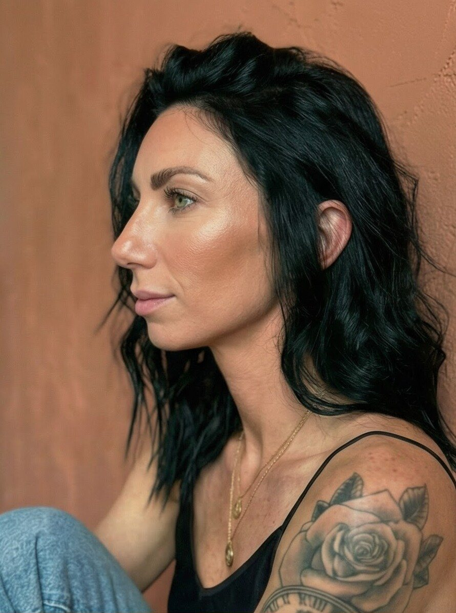
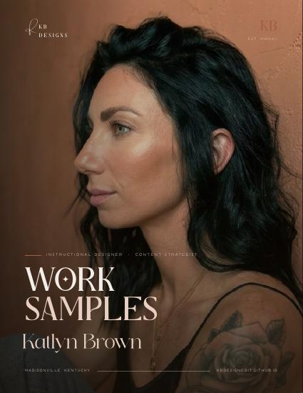
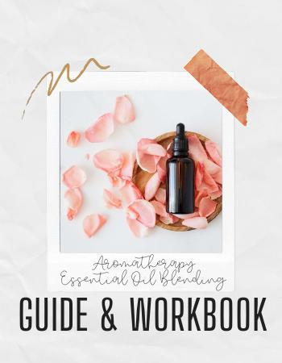
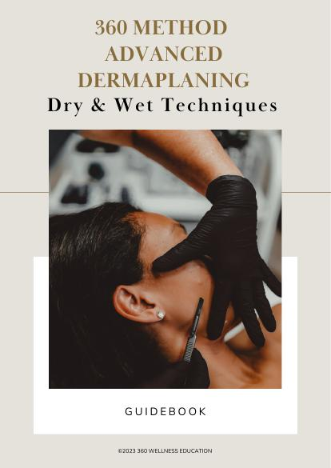
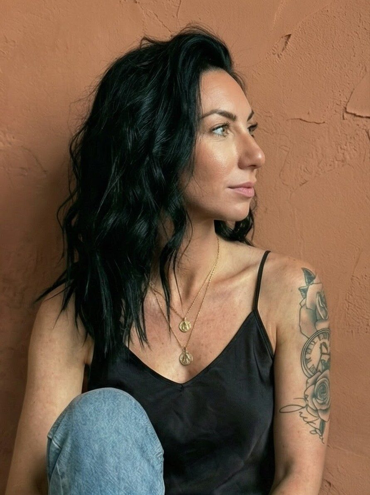
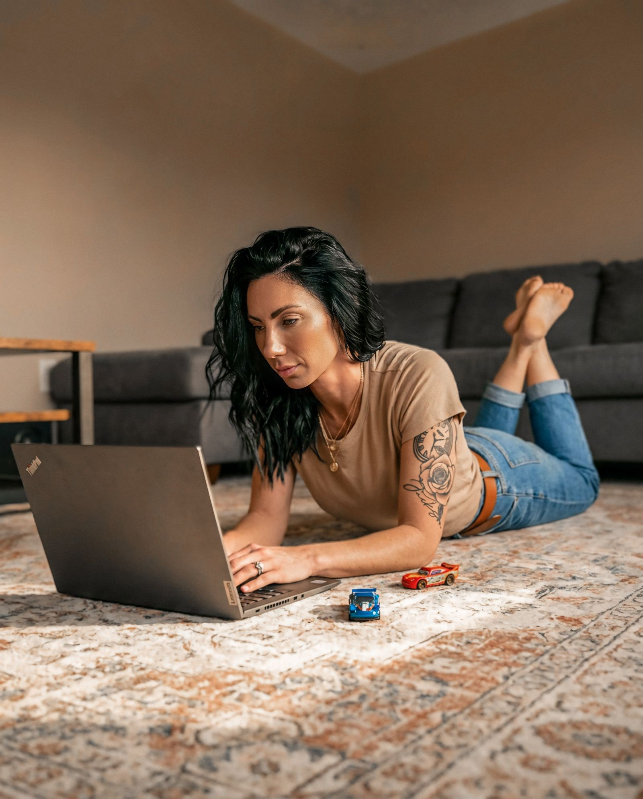

Designing learning that moves people.
I'm Katlyn — a former teacher turned learning-experience designer. I take dense, expert-written material and turn it into courses, guides and campaigns that people actually finish, remember and use.

LMS & content redesign
knowledge retention
CEU courses I built
corporate L&D & marketing
From content to course.
A 26-page subject-matter draft on the skin microbiome — dense, linear, and full of notes like "is this possible?" — rebuilt into a 13-module course skin professionals can actually learn from, and a client can actually sell.

Selected work.
Nine projects across four practice areas. Tap any one for the brief, my role, and what changed.
Open the real thing.
Screens only say so much. These are full documents I designed — open any of them and flip through the actual pages.

Work Samples, Vol. 01
The whole portfolio as a printable editorial book.
Open PDF ↗
Aromatherapy Blending
Objectives, safety, and scaffolded theory-to-practice.
Open PDF ↗
Advanced Dermaplaning
Procedural training for licensed professionals.
Open PDF ↗
Busy Mom's Bible Plan
Five minutes a day for thirty days — designed to be finished.
Open PDF ↗Six disciplines, one designer.
- 01
Instructional design
ADDIE-based curriculum from needs analysis and learning objectives through storyboards, assessments and evaluation.
- 02
eLearning development
Interactive, SCORM-ready modules with knowledge checks and branching — built to hold attention on any LMS.
- 03
Training program design
Onboarding, product training, CEU and professional-development programs designed for real behavior change.
- 04
Content design & strategy
Brand storytelling, UX writing and content systems that speak clearly to more than one audience at once.
- 05
Graphic & visual design
Branded collateral, social, video and print — the visual layer that makes information feel considered.
- 06
Performance consulting
Root-cause and gap analysis that ties learning and content work back to the business outcome it's meant to move.
Learning
ADDIE · Adult learning theory · Bloom's · Kirkpatrick · Needs assessment · Accessibility & differentiation
Platforms
Articulate Storyline & Rise · LMS administration · SCORM / xAPI · Learning analytics
Design & media
Photoshop · Illustrator · InDesign · Premiere Pro · Canva · Video production
Web & ops
HTML / CSS · Wix · UX & CRO · Monday.com · Airtable · Google Workspace


Real. Driven. Down to earth.
I started in a special-education classroom, writing plans for students nobody else had figured out how to reach. That's still the job — just with bigger audiences.
Since then I've built CEU courses for a platform serving 1,000+ professionals, trained nail techs and spa therapists for brands like CND and Bellabaci, and run marketing and content for a performance shop and a campus-safety SaaS. The through-line is the same: find the learner, cut the noise, and make the important thing impossible to miss.
Based in Madisonville, Kentucky. I bring the rigor of learning science and the eye of a designer — and I show up as a whole person.
- 2025 — NowGraphic Designer (Contract)SaferMobility, LLC · Remote
- 2024 — NowMarketing & Content DesignerIron Horse Performance
- 2022 — 2023Online Course CoordinatorUniversal Companies · CEU course design & LMS
- 2021 — 2022Title I Instructional AssistantHopkins County Public Schools
- 2019 — 2021Special Education TeacherHopkinsville High School
- B.S.EducationMurray State University
Katlyn is not just a designer; she is a strategic thinker. She would be an invaluable asset to any team requiring a high-level creative strategist.
Full letters available on request.
Let's build something worth remembering.
